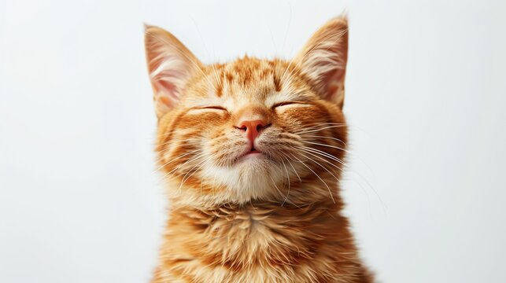

Фильтр blur (размытие):
0px
Фильтр brightness (яркость):
100%
Фильтр contrast (контраст):
100%
Фильтр grayscale (оттенки серого):
0%
Фильтр hue-rotate (оттенок цвета):
0deg
Фильтр invert (инвертирование):
0%
Фильтр saturate (насыщенность):
100%
Фильтр sepia (сепия):
0%
